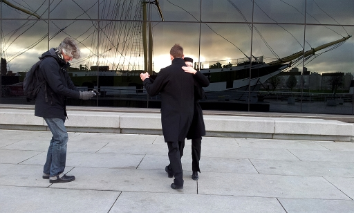
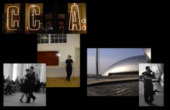

We love to explore tango in different contexts.
Are you an actor, dancer, performance artist, photographer, visual artist or musician? Do you have an idea to include some elements of tango in your performance or work? We would be very happy to bounce ideas and discuss your project.
Are you starting up a new business and are you looking for a special touch? A special opening night, a tango-themed event? We would love to hear from you.

Some of our past projects:
- 2013: 28 Tangos - February Tango Challenge via Facebook and twitter
- 2013: Extreme Tango @ Riverside Museum (1 Jan 2013)
- 2012: Development of ideas for an Authentic Tango collection for a leading UK shoe manufacturer
- 2012: Design of transformable tango dresses in collaboration with allenomis
- 2011: The Sweet Passion of Tango: Open-air Tango performance in the Botanic Gardens with artistic photography by Annalisa Simonella and Brian Loudon
- 2011: Tango in the Westend: Artistic photography at a series of Westend locations - in collaboration with Annalisa Simonella and Brian Loudon
- 2010: AT4AT: Alexander Technique for Authentic Tango - Tango posture workshops with Alexander Technique teacher Michal Segal, MSTAT
- 2010: Participation of a number of our pupils in a Psychology Honours project about the cognitive aspect of tango
- 2009: Dance scenes for motion study for a tango animation video
- 2008: Opening and closing performance of the Bolshie Fashion Show during the Westend Festival
- 2008: Dance scenes at various locations for the documentary "Recapturing the Golden Age of Tango" by Morgana McCabe
- 2008: Design of limited-edition tango T-shirts in collaboration with Bolshie Clothing
- 2007: Tango and Wine tasting event in collaboration with Champagnes d'Ecosse
- 2007: Creation of theatrical tango performances in collaboration with drama coaches from the RSAMD
- 2006: Tea and Tango event in collaboration with The TeaSpot, supplier of specialist loose tea from around the world
- 2005: Tango demonstration video in collaboration with Joan and Laurie Keenan
- 1997: Illustrated history of Tango
Feel free to contact us to discuss your ideas.



 About us
About us Tango projects
Tango projects Tango projects
Tango projects Last verified: 6 April 2014
Last verified: 6 April 2014